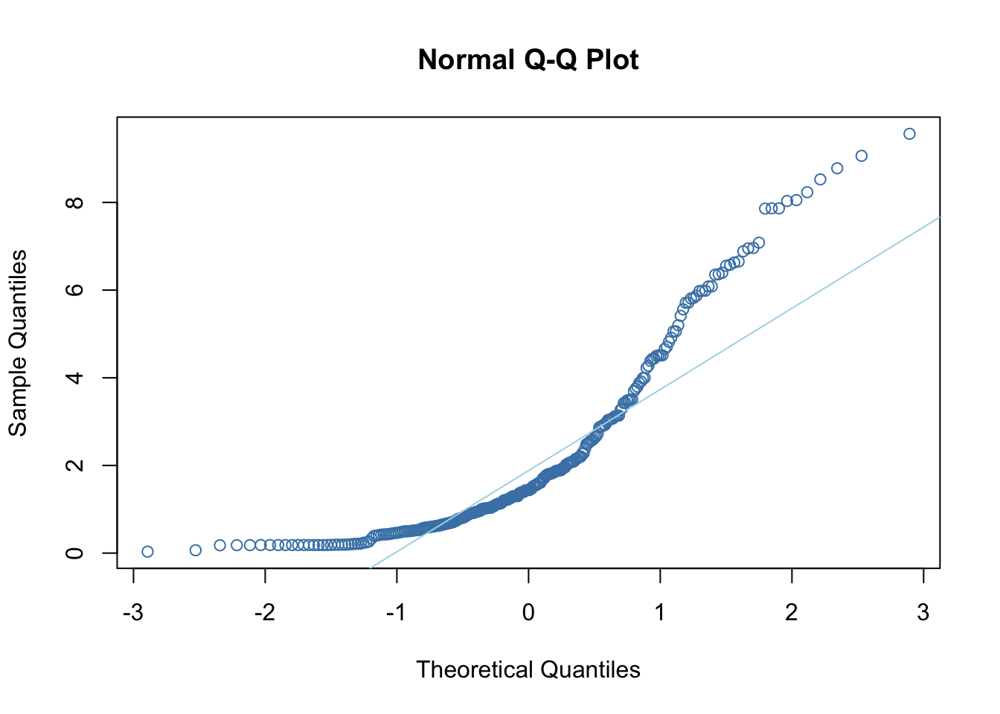
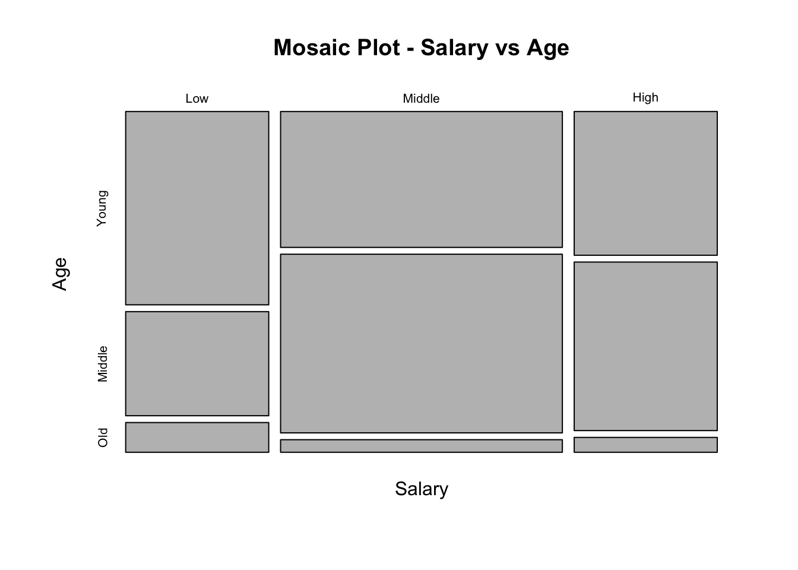
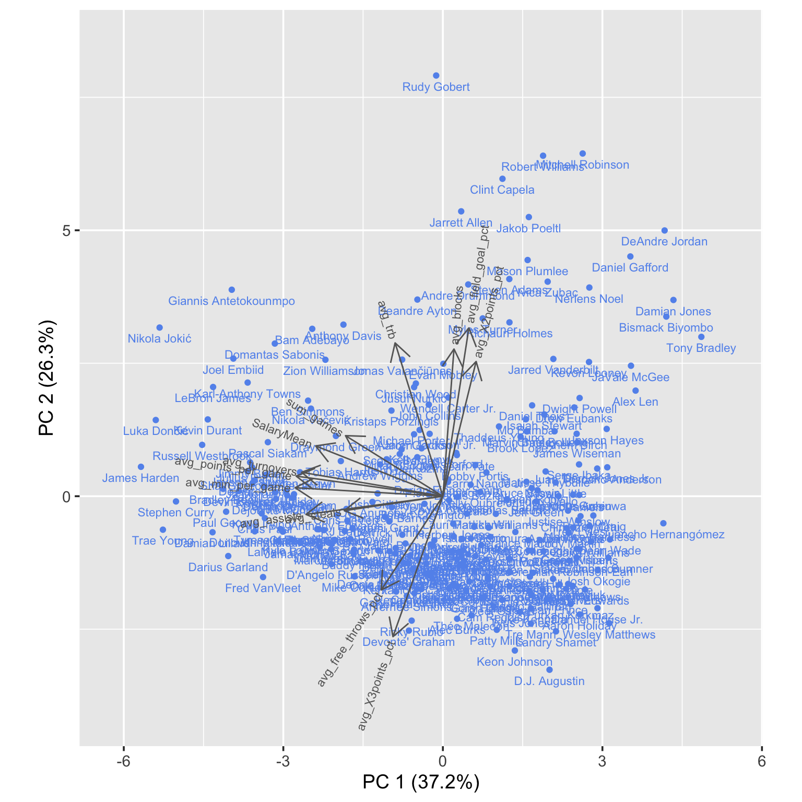
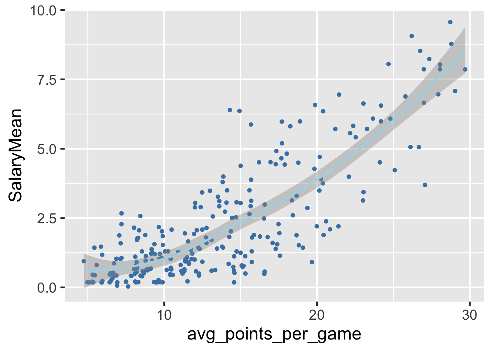

Chapter 4 Results
4.1 Player Contract Salary Mean Ranking (Cleveland dot plot)
This figure presents a Cleveland dot plot for players and their contract salary mean, ordering from high to low. The graph shows that Stephen Curry has the highest salary of 95659328, followed by Devin Booker, with a contract salary mean of 90634700. On the other hand, D.J. Augustin has the lowest salary mean from our dataset. Additionally, we can observe a roughly right-skewed distribution of players’ salaries, with more players having below-average salary mean and fewer number of players with extremely high salaries.
4.2 Player Contract Salary Mean Distribution (Q-Q plot and Shapiro-Wilk normality test)

##
## Shapiro-Wilk normality test
##
## data: x
## W = 0.83822, p-value = 7.557e-16Since salary distribution is known to be normal in most cases, we want to look at the normality of contract salary mean distribution of the players naturally. By comparing the graphical impressions from the Q-Q plot with the result of the Shpiro-Wilk Test (p-value = 7.7557e-16, much smaller than 0.05 and it’s significant), we conclude that the salary distribution generated from our sample is not normally distributed at all. Instead, the distribution of the contract salary means of the players in our sample is heavily right-skewed according to the Q-Q plot, as the data points appear to be clustered in the lower quantile. This result, as expected, shows that the top NBA players are paid much more than other players, as the teams try to keep the best-performing players with higher contract salaries.
4.3 Relationship between Player Contract Salary Mean and Age (Mosaic plot)

Chi-square Test
## Young Middle Old
## Low 39 21 6
## Middle 54 71 5
## High 29 34 3## Young Middle Old
## Low 30.73282 31.74046 3.526718
## Middle 60.53435 62.51908 6.946565
## High 30.73282 31.74046 3.526718##
## Pearson's Chi-squared test
##
## data: counts
## X-squared = 10.331, df = 4, p-value = 0.0352Here is a mosaic plot showing the relationship between age and salary. We first categorized the continuous salary variable by splitting it into three groups. The salaries within the ‘Low’, ‘Middle’, and ‘High’ groups are bounded by 25th, 75th, and 100th percentiles respectively. From this figure, we can conclude that among the middle class in the league, middle-aged and young players make up the main part. But in the lower salary category, there are more younger players, which is in line with the NBA’s rookies salary terms.
For the Chi-square test, we got a p-value value of 0.03, which is less than the significance level of 0.05. This indicates there is sufficient evidence to conclude that the observed distribution is not the same as the expected distribution. Thus, it is reasonable to conclude an existing relationship between the categorical variables.
4.4 Relationship between Player Contract Salary Mean and Age (Boxplot)
This figure demonstrates a box plot of players’ salary distribution related to their age. We observed that the salary variances and distribution of each age category are similar. However, the old players (>33 years old) have the lowest salary median, and the middle age players have more outliers. After examining, we found the outlier players are mostly eminent and well-known players, such as Stephen Curry and Lebron James. This indicates that famous players are more likely to have higher salaries.
4.5 Player Contract Salary Mean for Different Teams (Ridgeline plot)
Here is a ridgeline plot of players’ salaries grouped by the NBA teams. In most of the teams (HOU, ORL, SAS, etc), the salary distribution appears to be unimodal. We discovered that most of these uni-modal teams have not entered the playoffs in recent years, therefore it is reasonable to make a conclusion that this is because these teams do not have an absolute single or multiple core players.
Furthermore, we chose some playoff teams and teams with superstars to examine their modality of salary mean. For LAL team led by Lebron James, Russel Westbrook and Anthony Davis, the salary is bimodal. Likewise, we observed a similar pattern for LAC team led by Paul George and Kawhi Leonard. However, for playoff team BOS, there is only one modal, this is because Jayson Tatum and Jaylen Brown are still young players, whose salaries might not be as high as the other eminent and experienced players.
Another interesting finding is that the teams with relatively higher salaries have higher chances of entering the playoffs. This could be an indication that a higher salary can trigger better performance of the players.
4.6 Parallel Coordinate Plot

This figure shows a parallel coordinate plot using the ggparcoord() function, and it displays the relationship among the variables. From the plot, we can conclude a roughly positive relationship between avg_points_per_game and SalaryMean, and a roughly negative relationship between avg_min_per_game and avg_field_goal_pct.
4.7 Player Contract Salary Mean vs All Continuous Player Statistics (PCA)
 We generated a PCA graph using prcomp() function. We extracted the two most significant PCA features from those, which could explain roughly 60% importance of the final results. Stephen Curry is supposed to have the highest salary in our dataset, but the biplot above shows that he is not the most well-paid player. Thus we can’t fully rely on this plot itself. We observed that the salary has the strongest association with the number of games, average turnovers and average points per game, since their arrow lines are pointing to the same direction. This is intuitive because these variables are closely related to the possession of the ball in the game – important players tend to play more games and have more possession of the ball. On the other side, the average three points precision and average two points precision have the least correlation with the salary, as their arrow lines are perpendicular to salaries.
Another interesting finding is that the inside players (center and power forward) are mostly distributed on the upper-right with more rebounds, and two pointers, e.g., DeAndre Jordan, Mitchell Robinson, JaVale McGee. Moreover, (Point guard, shooting guard , Small forward) are mostly distributed on the left-bottom, with more assists, steals and three pointers, e.g., Kyrie Irving, Trae Young, Chris Paul.
4.8 Average Points per Game vs Player Contract Salary Mean (Scatterplot)

Here is a scatterplot of players’ salary related to their average points per game. We utilized geom_smooth() to fit these points, and we observed a roughly linear correlation between player salary and the average points per game. It is indicated that players who earned more points in each game on average tend to have higher salaries. One possible reason for this is that these players have more possessions of the ball during the games.
4.9 Player Contract Salary Mean vs Total Number of Games Conditioning on Age Group (Multi-facets Scatterplot)

Our PCA plot suggests that the sum_games has strongest association with players’ salary, sp we get a categorical scatter plot of salary mean related to this variable. We notice that there is no clear positive association in the middle age, which makes up a major part of the player population. A possible explanation for this is that there are many outliers in this group. Alternatively, in old and young age range, we can observe a more positive relationship between the sum games and salary mean.
4.10 Player Contract Salary Mean vs Team and Age Group (Heatmap)

Here is a heatmap regarding players’ team and age, where we observed the salary related to players’ age in each team. Three most representative teams in this plot are LAL, GSW, and DAL. In LAL, old players tend to have the highest salary mean. In GSW, middle age players tend to have high salary, such as Stephen Curry, Klay Tompson and Andrew Wiggins are all among middle age rank. In DAL, younger players tend to have higher salary, such as Tim Hardway JR. and Luca Doncic.